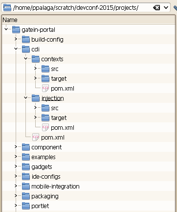
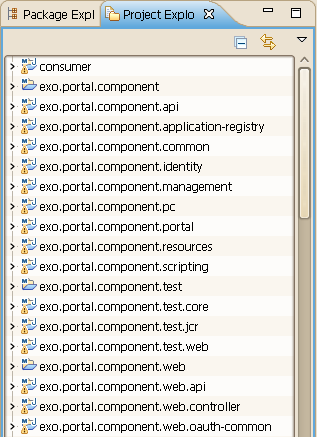
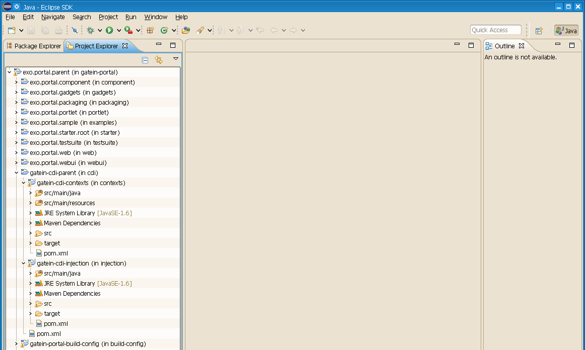

git clone https://github.com/gatein/gatein-portalMulti-module projects in Eclipse
Peter Palaga, Red Hat JBoss PortalDevConf Brno 2015-02-07
Please raise your hand…
- Who has ever used (or even tried to use) Eclipse to code in any programming language?
- Who is/was disappointed with Eclipse?
- Who is working with large multi-module projects daily, using any IDE?
A multi-module project in Eclipse (1/2)
Take GateIn Portal as a an example:
... and import to Elipse as a bunch of Maven projects
A multi-module project in Eclipse (2/2)
|
While the file system hierarchy mirrors the logical structure of the modules |
|
In Eclipse we are presented with a flat list of 109 projects ordered by artifactId |
|
|
 |
|
 |
|
Workarounds
Working sets
- One level only
- Manual
- Does not scale when having many modules
Naming conventions
- Name the modules so that they keep the file system order when ordered alphabetically
- Guaranteed to look stupid in front of IntelliJ and NetBeans users
- Use multiple workspaces to manage parts of a single source tree?
None of the above helps really
The aim
|
This is what we want |
|
|
Because open source…
- Initiative taken by Mickeal Istria and Max Andersen from JBoss Tools team
- Started in jbosstools-playground repository under the name Nestor
- Technically simple and elegant, using the available APIs of Project Explorer
- Demo
User’s perspective

Form the user perspective:
- New context menu in Project Explorer to switch to the hierarchical presentation
- Backed by a persistent preference
Hierarchical project presentation

Future #defined
- Meanwhile accepted for Eclipse Mars 4.5 M5 (to appear on 2015-02-06)
- Download and try!
- https://eclipse.org/downloads/packages/release/Mars/
Still missing
- No change in the Package Explorer
- The same functionality in the Search View
Sum up
Things get better in Eclipse
- Do not leave
- Eventually come back!
About me
- My contribution to nested projects was minimal
- Primarily Senior Sustaining Engineer at Red Hat JBoss Portal
- Also contributing to several Eclipse plugins ShellEd, FreeMarker Editor, EIRCC
@ppalaga
https://github.com/ppalaga
/